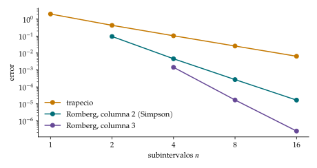

Para arrancarSi sabes cómo se comporta el error, puedes cancelarlo: combinas dos aproximaciones malas para obtener una buena. Esa es la extrapolación de Richardson, y Romberg la repite como una escalera.
12.1 Integración de Romberg
El error del trapecio compuesto tiene un desarrollo en potencias pares de h (fórmula de Euler–Maclaurin): ∫abf=T(h)+K1h2+K2h4+K3h6+⋯ Por eso se le puede aplicar la extrapolación de Richardson repetidamente. Sea Rk,1=T(hk) con hk=2k−1b−a; entonces Rk,j=Rk,j−1+4j−1−1Rk,j−1−Rk−1,j−1. La columna j tiene error O(hk2j). La segunda columna es exactamente Simpson compuesta, y la tercera, Boole compuesta.
Con solo 9 evaluaciones de f se obtienen 5 cifras; el trapecio necesitaría cientos.
Además, T(h/2) reutiliza todas las evaluaciones de T(h): Rk,1=21[Rk−1,1+hk−1∑i=12k−2f(a+(2i−1)hk)].
12.2 Cuadratura adaptativa
Las reglas compuestas usan un paso uniforme. Pero una función como x2100senx10 en [1,3] oscila mucho cerca de 1 y es casi plana cerca de 3: conviene un paso pequeño solo donde haz falta.
Sea S(a,b) la regla de Simpson en [a,b] con h=2b−a. Con un paso y con dos: ∫abf∫abf=S(a,b)−90h5f(4)(ξ1),=S(a,2a+b)+S(2a+b,b)−161⋅90h5f(4)(ξ2). Si suponemos f(4)(ξ1)≈f(4)(ξ2) y restamos, el error de la segunda aproximación es ∫abf−S(a,2a+b)−S(2a+b,b)≈151S(a,b)−S(a,2a+b)−S(2a+b,b).
Si S(a,b)−S(a,m)−S(m,b)<15ε, con m=2a+b, se acepta S(a,m)+S(m,b) como aproximación de ∫abf con error ≈<ε. Si no, se aplica el procedimiento recursivamente a [a,m] y [m,b] con tolerancia 2ε en cada uno.
El factor 151=16−11 es el mismo de la extrapolación de Richardson para un método de orden 4. En la práctica se usa 10ε en lugar de 15ε para compensar que f(4)(ξ1)=f(4)(ξ2). El laboratorio del capítulo muestra cómo se refinan los subintervalos donde la función cambia rápido.
Para ∫01exdx y ε=10−4, decide si basta un nivel de la cuadratura adaptativa.
Soluciónintenta primero
S(0,1)=61[1+4e0,5+e]=1,7188612; S(0;0,5)+S(0,5;1)=1,7183188. La diferencia es 5,42×10−4<15×10−4: se acepta, con error estimado 3,6×10−5. (El error real es e−1−1,7183188=3,7×10−5.)
InteractivoCuadratura adaptativa
Baja la tolerancia: los subintervalos se concentran donde la función oscila.
🔎 Profundiza: la tabla de Romberg completa
Para ∫0πsinxdx=2, la primera columna son trapecios con 1,2,4,8,16 subintervalos; cada columna nueva cancela el siguiente término del error con Rk,j=Rk,j−1+4j−1Rk,j−1−Rk−1,j−1.
n
Trapecio
Columna 2
Columna 3
Columna 4
1
0
2
1,570796
2,094395
4
1,896119
2,004560
1,998571
8
1,974232
2,000269
1,999983
2,000006
16
1,993570
2,000017
2,0000000
2,0000000

Cada columna de Romberg converge mucho más rápido que la anterior (escala logarítmica).
Con solo 17 evaluaciones del seno, Romberg obtiene 8 cifras correctas; el trapecio con esos mismos puntos apenas da 2.
Ojo, parcero: errores que veo en los parciales
Richardson con factor 2p equivocado → para el trapecio, 34T(h/2)−T(h)
adaptativo = subintervalos iguales → más pequeños donde la función es difícil
✦Practica activa
Retos para afianzar las ideas del capítulo: arma la demostración con los bloques en el orden correcto y caza el paso falso de un argumento.
🧩 Ordena la soluciónUn paso de Richardson
Con trapecio T(h)=0,375 y T(h/2)=0,34375 para ∫01x2dx, extrapole.
🔍 Encuentra el errorCuadratura adaptativa
Se integra f(x)=x en [0,1] con Simpson adaptativo.
✎ Repaso del capítulo
El factor en el criterio adaptativo de Simpson
Con S y S2 (dos mitades), I−S2≈16−1S2−S: el factor es 15.